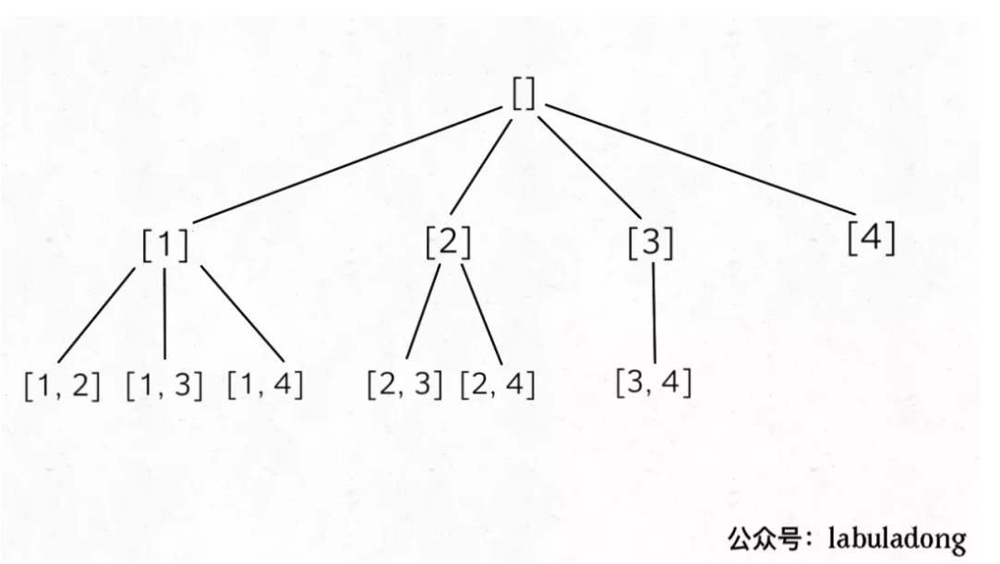
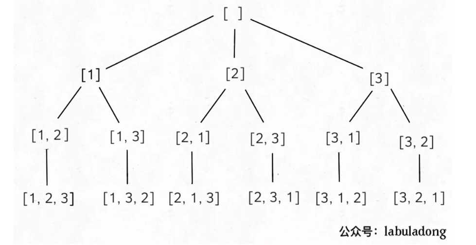

回溯算法注意决策选择, 实际上每一个决策都来自于递归树。回溯算法就是穷举一棵决策树的过程
子集选择
输入一个不包含重复数字的数组，要求算法输出这些数字的所有子集。
如下是递归树
我们可以发现
- 结果包含递归树的每一个节点，而不仅仅是叶子节点
- 无重复集合
- 树高与起始索引有关
void backtrack(const vector<int>& nums, vector<int>& track, int index) {
/// 下面这一行可以获得递归树的每一个节点()
res.push_back(track);
/// 使用index, 保证无重复集合
/// 有重复集合, 变为int i = 0, 例如排列问题
for (int i = index; i < nums.size(); i++) {
track.push_back(nums[i]);
backtrack(nums, track, i+1);
track.pop_back();
}
}组合问题
输入两个数字 n, k，算法输出 [1..n] 中 k 个数字的所有组合。
比如输入 n = 4, k = 2，输出如下结果，不能包含重复（按照组合的定义，[1,2] 和 [2,1] 也算重复）：
[
[1,2],
[1,3],
[1,4],
[2,3],
[2,4],
[3,4]
]
我们可以发现
- 需要的结果来自叶子节点
- 无重复集合
- k 决定树高
void backtrack(vector<int>& nums, int k, vector<int>& track, int index) {
/// k 决定树高, 因此k==0时return
if (k == 0) {
/// 需要的结果来自叶子节点, 因此return前对res进行push_back
res.push_back(track);
return ;
}
/// 使用index, 保证无重复集合
/// 有重复集合, 变为int i = 0, 例如排列问题
for (int i = index; i < nums.size(); i++) {
track.push_back(nums[i]);
backtrack(nums, k-1, track, i+1);
track.pop_back();
}
}排列
输入一个不包含重复数字的数组 nums，返回这些数字的全部排列。
比如说输入数组 [1,2,3]，输出结果应该如下
[
[1,2,3],
[1,3,2],
[2,1,3],
[2,3,1],
[3,1,2],
[3,2,1]
]
我们可以发现
- 需要的结果来自叶子节点
- 有重复集合, 例如[1,2,3],[1,3,2]
- 输入nums的size决定树高
void traceback(const vector<int>& list, vector<int>& track) {
/// 输入list的size决定树高
if (list.size() == track.size()) {
/// 需要的结果来自叶子节点
res.push_back(track);
return;
}
/// 有重复集合, 因此起始int i = 0
for (int i = 0; i < list.size(); i++) {
/// 当前元素list[i]不在track里面
if (!count(track.begin(), track.end(), list[i])) {
track.push_back(list[i]);
traceback(list, track);
track.pop_back();
}
}
}括号生成
输入是一个正整数n，输出是n对儿括号的所有合法组合
比如说，输入n=3，输出为如下 5 个字符串：
"((()))",
"(()())",
"(())()",
"()(())",
"()()()"通过递归树
- 需要的结果来自叶子节点
- 选择有两种,左括号和右括号
- 输入n，树高为2n
- 剪枝条件, 任一时刻, 左括号个数>=右括号个数
void backtrack(string& track, int left_num, int right_num, const int n) {
// 剪枝条件, 任意时刻, 左括号个数>=右括号个数， 不满足退出
if (left_num < right_num)
return;
/// 需要的结果来自叶子节点
if (left_num == n && right_num == n) {
res.push_back(track);
return;
}
/// 做选择, 左括号, 条件是left_num < n
if (left_num < n) {
track.push_back('(');
backtrack(track, left_num+1, right_num, n);
track.pop_back();
}
/// 做选择, 右括号, 条件是right_num < n
if (right_num < n) {
track.push_back(')');
backtrack(track, left_num, right_num+1, n);
track.pop_back();
}
}路径
leetcode 576
给你一个大小为 m x n 的网格和一个球。球的起始坐标为 [startRow, startColumn] 。你可以将球移到在四个方向上相邻的单元格内（可以穿过网格边界到达网格之外）。你 最多 可以移动 maxMove 次球。
给你五个整数 m、n、maxMove、startRow 以及 startColumn ，找出并返回可以将球移出边界的路径数量。因为答案可能非常大，返回对 10^9 + 7 取余 后的结果。
一般二维网格路径题使用记忆化搜索和动态规划均可以解决, 但记忆化搜索更加便于理解。
记忆化搜索需要记忆状态，这和动态规划类似。在写记忆化搜索时传递的参数需要有状态。dfs(int m, int n, int x, int y, int k) 其中x,y,k对应着一个状态
- 加备忘录的是回溯的特殊情况
- 加备忘录时, 函数的返回值不为void,而是int
Leetcode 552 学生出勤记录
无备忘录情况
void backtrack(vector<char>& list, vector<char>& track, int k,int A, int L) {
if (k == 0){
res++;
res %= MOD;
}
int ans = 0;
for (char c : list) {
if (L == 2 && c == 'L' || A == 1 && c == 'A') {
continue;
}
else{
track.push_back(c);
// 备忘录的状态, L应该是连续状态
if (c == 'A')
backtrack(list, track, k-1, A+1, 0);
else if (c == 'L')
backtrack(list, track, k-1, A, L+1);
else
backtrack(list, track, k-1, A, 0);
track.pop_back();
}
}
}有备忘录情况
int backtrack_mm(vector<char>& list, vector<char>& track, int k,int A, int L) {
if (k == 0){
// 到达边界, return 1, 表示一种可能性
return 1;
}
if (cache[k][A][L] != 0){
return cache[k][A][L];
}
int ans = 0;
for (char c : list) {
if (L == 2 && c == 'L' || A == 1 && c == 'A') {
continue;
}
else{
track.push_back(c);
// 备忘录的状态, L应该是连续状态
// 有备忘录时, ans应该设置为+
if (c == 'A')
ans = (ans + backtrack_mm(list, track, k-1, A+1, 0)) % MOD;
else if (c == 'L')
ans = (ans + backtrack_mm(list, track, k-1, A, L+1)) % MOD;
else
ans = (ans + backtrack_mm(list, track, k-1, A, 0) ) % MOD;
track.pop_back();
}
}
cache[k][A][L] = ans;
return ans;
}